SISTEM INFORMASI SEKOLAH MENENGAH PERTAMA PANCASILA MENGGUNAKAN METODE SCRUM

5200411476 Risky Devandra Hartana
5200411477 Robi Ardiansyah
5200411478 Cipta Andika Putra Pratama
5200411479 Cornellius Agova Madu Putera
5200411480 Faris Yudhika Ardana
PROGRAM STUDI INFORMATIKA
FAKULTAS SAINS & TEKNOLOGI
UNIVERSITAS TEKNOLOGI YOGYAKARTA
2020/2021
BAB I
Pendahuluan
1.1 Latar Belakang Masalah
Pada saat ini perkembangan teknologi informasi dan komunikasi (TIK), khususnya teknologi komputer sudah sangat mempengaruhi berbagai bidang kehidupan, baik dibidang ekonomi, sosial, budaya, maupun pendidikan. Salah satu produk teknologi yang popular adalah teknologi website.Teknologi internet dapat memudahkan untuk mengakses data dan mencari berita maupun informasi secara online. Pemanfaatan teknologi informasi berbasis website tidak hanya dimanfaatkan oleh perusahaan ataupun pemerintahan. Namun sudah mulai menjadi kebutuhan mendasar dalam pemanfaatan media informasi online berbasis website ini dimanfaatkan di dunia pendidikan. Hal ini dapat dilihat dari hampir sekolah tingkat menengah pertama maupun atas sudah mempunyai website. Karena sangat memudahkan para calon peserta didik baru untuk mencari informasi dan melakukan pendaftaran secara online.
Sistem Pendaftaran Berbasis Web merupakan sebuah sistem yang akan digunakan pada pedaftaran siswa baru di SMP Pancasila yang terletak di wilayah Kecamatan Banguntapan, Kabupaten Bantul, Daerah Istimewa Yogyakarta. SMP Pancasila setiap melakukan penerimaan peserta didik baru selalu menerima banyak sekali siswa bahkan hampir satu daerah berminat ke sekolah ini. Namun, pelayanan yang digunakan masih menggunakan pelayanan dengan manual sehingga waktu yang digunakan lebih lama dan tidak efisien dan pendataan akan berpeluang terjadi kekeliruan.
Pemanfaatan website di sekolah selain dimanfaatkan untuk menyajikan informasi secara online bagi civitas akademikanya dan masyarakat, namun sekolah juga sudah mulai mengoptimalkan website untuk dijadikan sebagai sistem online yang membantu kerja-kerja tertentu. Salah satu sistem yang sekarang terbukti manfaatnya adalah sistem informasi Penerimaan Peserta Didik Baru (PPDB).SMP Pancasila, saat ini adalah sekolah yang membuka kelas sebanyak 18 kelas, dan 800 siswa per tahun. Dari kebutuhan siswa yang cukup besar ini, panitia PPDB yang bertanggun jawab atas keberhasilan pemenuhan kuota siswa, membutuhkan kerja ekstra.
1.2 Rumusan Masalah
Berdasarkan latar belakang tersebut, dapat dirumuskan masalah sebagai berikut “ Bagaimana membuat suatu sistem website yang dapat digunakan untuk memudahkan calon siswa baru dan para orang tua dapat dengan mudah mendaftarkan calon siswa ke sekolah dan dapat memantau perkebangan dari siswa”.
1.3 Tujuan Penelitian
Menghasilkan sistem informasi pendaftaran sekolah berbasis online / website.
1.4 Manfaat Penelitian
- Meningkatkan efisiensi dan efektifitas pengelolaan data pada sekolah.
- Calon siswa lebih mudah memahami untuk melakukan pedaftaran karena dilakukan secara online.
- Sekolah juga dapat lebih mendata calon siswa dan siswa yang ada di sekolah.
- Orang tua siswa pun juga lebih mudah untuk melakukan pengecekan keaktifan siswa dalam waktu pembelajaran.
BAB II
Landasan Teori
2.1 Metodologi SCRUM
Menurut Adi & Permana (2015) dalam penelitiannya yang berjudul “Scrum Method Implementation in a Software Development Project Management” menyatakan bahwa Scrum pertama kali dikembangkan oleh Jeff Sutherland pada tahun 1993 dan tujuannya adalah menjadi metodologi pengembangan yang mengikuti prinsip-prinsip metodologi Agile. Scrum adalah kerangka kerja responsif tambahan dari pengembangan perangkat lunak untuk proyek perangkat lunak dan mengelola produk atau pengembangan aplikasi. Fokusnya adalah pada "strategi, pengembangan produk holistik yang fleksibel di mana tim pengembang bekerja sebagai unit untuk mencapai tujuan bersama" sebagai rival dari "pendekatan tradisional, urutan". Scrum memiliki beberapa proses yang kompleks dimana terdapat banyak faktor yang bisa mempengaruhi hasil akhir pengembangan sistem.
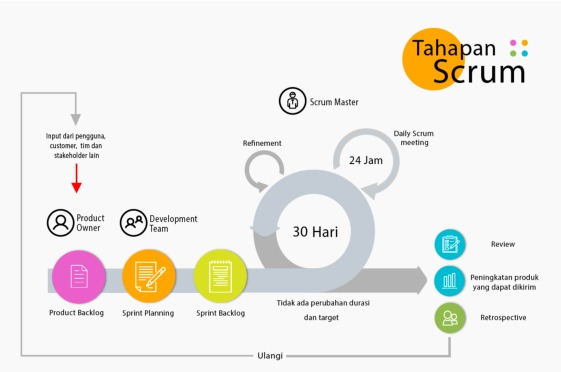Tahap-tahap dalam Scrum dibagi menjadi seperti berikut:
- Product Backlog
- Sprint Planning
- Sprint Backlog
Peneliti sistem akan mengumpulkan dan menyusun semua kebutuhan sistem dan permintaan pengguna terhadap sistem, misalnya fitur-fitur yang dibutuhkan oleh pengguna terhadap sistem. Setelah targetnya ditetapkan, semua kebutuhan dan permintaan akan dibagikan menjadi poin-poin kecil yang mana setiap poin tersebut mempunyai tingkat layak untuk dikembangkan
Sprint Planning merupakan sebuah langkah yang wajib dilaksanakan setiap saat akan memulainya sprint baru. Pada langkah tersebut peneliti akan menyusun pekerjaan pekerjaan apa saja yang harus diselesaikan dalam 1 sprint.
Sprint merupakan sebuah batas waktu yang mengandung pekerjaan pekerjaan kemudian sprint tersebut akan fokus terhadap delivery time dari hasil yang diambil dari Product Backlog.
Menurut Mahalakshmi & Sundararajan (2015), metodologi pengembangan scrum memiliki beberapa kelebihan yaitu sebagai berikut:
- Scrum memberikan kepuasan pelanggan dengan mengoptimalkan waktu penyelesaian dan responsif terhadap permintaan.
- Meningkatkan kualitas.
- Terima dan harapkan perubahan.
- Memberikan perkiraan yang lebih baik sambil menghabiskan lebih sedikit waktu untuk tahap pengembangan.
- Lebih mengontrol jadwal proyek.
- Scrum sangat ideal untuk mengubah, mengakumulasi dengan cepat pada permintaan.
- Banyak manfaat bagi pelanggan dan manajer proyek.
2.2 Sistem Informasi
Definisi sistem informasi menurut Hidayatullah & Arief (2016), sistem informasi merupakan suatu sistem di dalam suatu organisasi yang mempertemukan kebutuhan pengolahan transaksi harian, mendukung operasi, bersifat manajerial dan kegiatan strategi dari suatu organisasi dan menyediakan pihak luar tertentu dengan laporan-laporan yang diperlukan.
Menurut Rahmawati & Bachtiar (2018), komponen – komponen sistem informasi dibagi menjadi 5 yaitu sebagai berikut:
- Hardware (perangkat keras), mencakup berbagai peralatan fisik seperti komputer dan printer.
- Software (perangkat lunak), berupa perintah-perintah tertentu yang ditujukan untuk memerintahkan komponen melaksanakan tugasnya.
- Data, merupakan komponen paling dasar atau masih mentah dari suatu informasi yang akan diproses lebih lanjut agar dapat berarti dan dapat menghasilkan informasi.
- Prosedur, merupakan aturan-aturan yang digunakan untuk menghubungkan berbagai macam perintah dan data untuk menentukan rancangan dan penggunaan sistem informasi.
- Manusia, merupakan pelaksana yaitu mereka yang terlibat dalam kegiatan sistem informasi seperti operator, pemimpin dan sebagainya.
2.3 Website
Website adalah sekumpulan halaman web yang saling berhubungan yang umumnya berada pada peladen yang sama berisikan kumpulan informasi yang disediakan secara perorangan, kelompok, atau organisasi. Sebuah situs web biasanya ditempatkan setidaknya pada sebuah server web yang dapat diakses melalui jaringan seperti Internet, ataupun jaringan area lokal (LAN) melalui alamat Internet yang dikenali sebagai URL. Gabungan atas semua situs yang dapat diakses publik di Internet disebut pula sebagai World Wide Web atau lebih dikenal dengan singkatan WWW. Meskipun setidaknya halaman beranda situs Internet umumnya dapat diakses publik secara bebas, pada praktiknya tidak semua situs memberikan kebebasan bagi publik untuk mengaksesnya, beberapa situs web mewajibkan pengunjung untuk melakukan pendaftaran sebagai anggota, atau bahkan meminta pembayaran untuk dapat menjadi aggota untuk dapat mengakses isi yang terdapat dalam situs web tersebut, misalnya situs-situs yang menampilkan pornografi, situs-situs berita, layanan surel (e-mail), dan lain-lain. Pembatasan-pembatasan ini umumnya dilakukan karena alasan keamanan, menghormati privasi, atau karena tujuan komersial tertentu.
BAB III
PEMBAHASAN
3.1 METODE PENELITIAN
Metode penelitian yang digunakan dalam penelitian ini adalah metode pengembangan SCRUM yang memiliki proses seperti yang diperlihatkan pada gambar diatas.
A. Produck backlog
Tahapan ini mengelompokkan kebutuhan pengguna yang telah dihasilkan dari proses pengumpulan kebutuhan yang disebut dengan backlog items yang terdiri dari daftar fitur dan produk yang harus diselesaikan yang urut sesuai dengan skala prioritas. Pekerjaan yang dilakukan pada tahapan ini melakukan analisis terhadap kebutuhan sistem informasi SMP Pancasila. Karena SMP Pancasila dalam melakukan pengelolaan pendaftaran masih bergantung pada pendaftaran manual. Untuk itu peneliti melakukan komunikasi kepada pihak Sekolah, sistem informasi pendaftaran online yang dilakukan dengan teknologi web services. Komunikasi berkaitan dengan kebutuhan dilakukan dengan pihak sekolah SMP Pancasila yang diwakili oleh kepala bagian akademik dan kepada bagian IT sedangkan komunikasi tentang pembayaran pendaftaran yang diwakili oleh bagian keuangan dan staff IT.
B. Sprint planning
Tahapan ini adalah tahapan dimana peneliti memberikan paparan kepada pihak SMP Pancasila berkaitan dengan gambaran tentang bagaimana sistem pendaftaran akan dibuat menggunakan media prototype produk. Selain memaparkan tentang sistem pendaftran peneliti juga memaparkan berkaitan dengan hal teknis seperti kebutuhan jariangan internet, server, hosting, domain dan SDM yang akan mengelola sistem pendaftaran dan hal lainnya yang berhubungan dengan keberlangsungan sistem pendaftaran siswa.
C. Sprint backlog
Tahapan ini merupakan tahapan untuk melakukan pengerjaan pemenuhan kebutuhan sesuai backlog items yang telah diketahui berdasarakan product backlog atau fase analisis kebutuhan . Setelah hasil analisis kebutuhan diketahui maka produk yang dihasilkan harus mampu melakukan berbagai hal dengan proses seleksi masuk diantaranya adalah:
- sistem menyediakan pembuatan akun untuk mendaftar,
- menyediakan form pendaftaran,
- memberikan informasi pembayaran,
- pendaftar dapat mengupload bukti bayar,
- panitia dapat mengkonfirmasi pembayaran,
- siswa/wali dapat mencetak kartu seleksi dan mengikuti seleksi,
- panitia mengumumkan hasil seleksi.
3.2 Perancangan Sistem
Pada perancangan, menggunakan diagram kontek, DAD, ERD, dan perancangan database. Dimana tujuan dari diagram konteks adalah mengetahui keadaan sistem yang akan dibangun. Gambar 1 adalah diagram kontek untuk sistem yang dibuat.
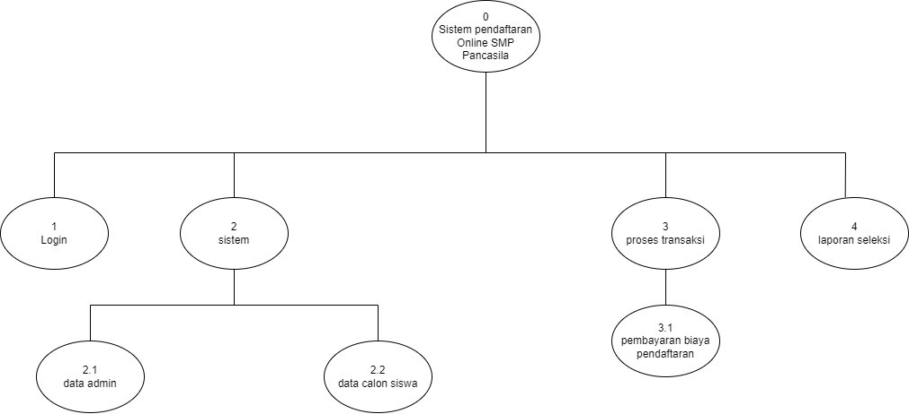Gambar diagram jenjang
Diagram konteks merupakan diagram yang terdiri dari suatu proses dan menggambarkan ruang lingkup suatu sistem. Diagram ini merupakan bagian dari level tertinggi diagram alir data (DAD) yang menggambarkan seluruh input kesuaru sistem. Diagram konteks akan memberi gambaran mengenai keseluruhan sistem. Dalam diagram konteks hanya terdapat satu proses saja.
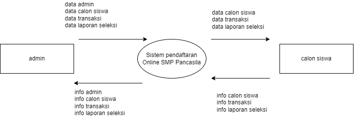Gambar 1 diagram konsteks
Berdasarkan Gambar 1, maka akan dipecah menjadi data alir data (DAD) di Gambar 2. DAD adalah suatu model logika data atau proses yang dibuat lebih mendetail dibanding diagram konteks yang diperbolehkan, bisa dicapai dengan mengembangkan diagram. Sisa diagram asli dikembangkan ke dalam gambaran yang lebih terperinci yang melibatkan tiga proses dan menunjukkan penyimpanan data dan aliran data baru pada level yang lebih rendah.
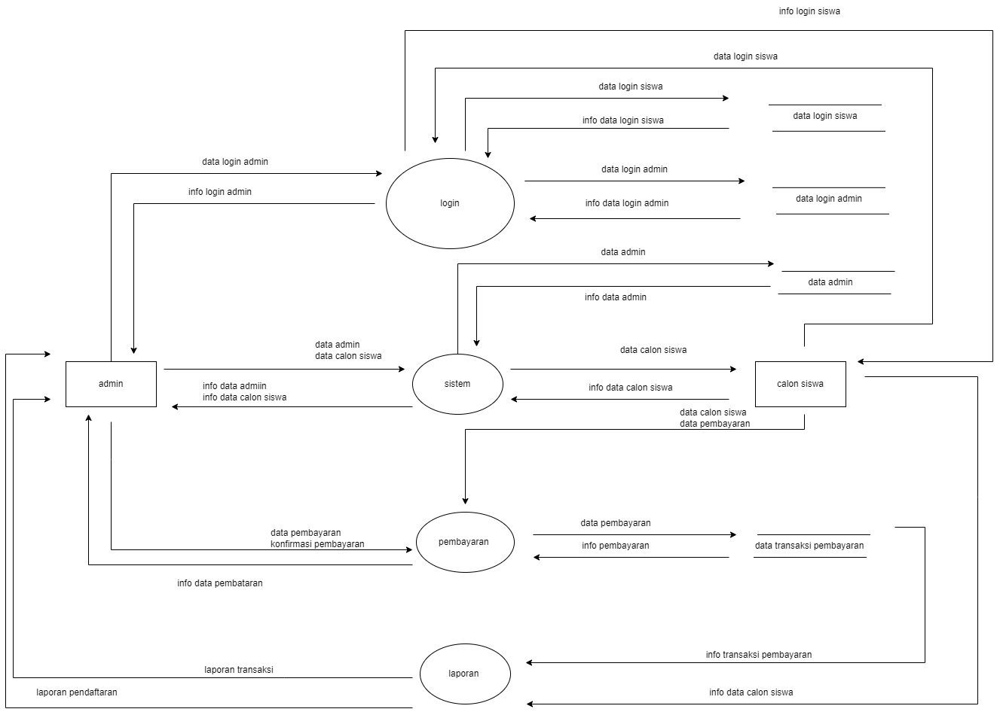Gambar 2 diagram DAD level 1

Gambar 3 diagram DAD level 2

Gambar 4 diagram DAD level 3
Entity Relationship Diagram (ERD) adalah diagram yang dapat mengambarkan relasi antar entitas yang digunakan dalam pembuatan sistem.
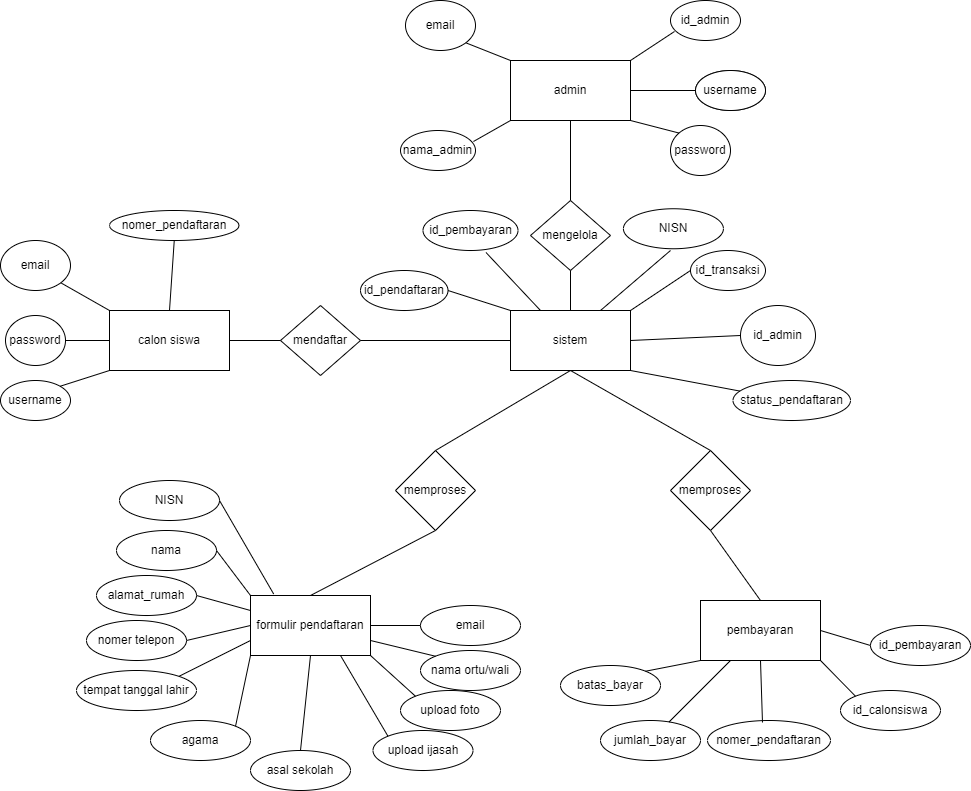Gambar 5 diagram ERD
3.3 Design Database
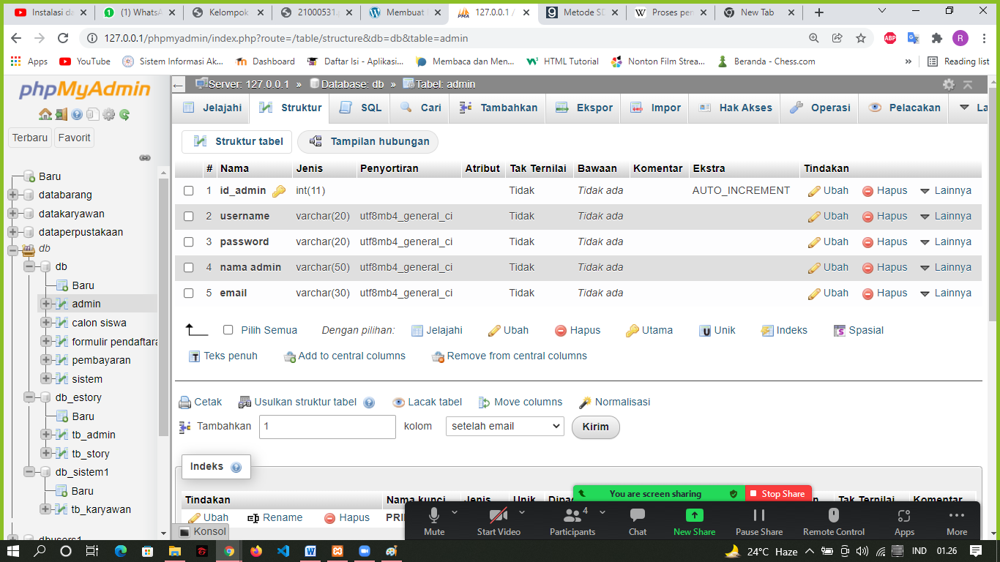Gambar 6 Tabel Admin

Gambar 7 Tabel Calon Siswa

Gambar 8 Tabel Formulir
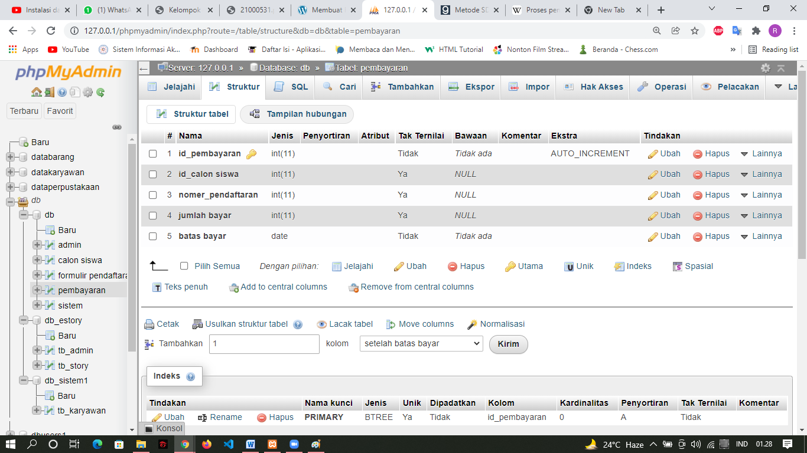
Gambar 9 Tabel Pembayaran
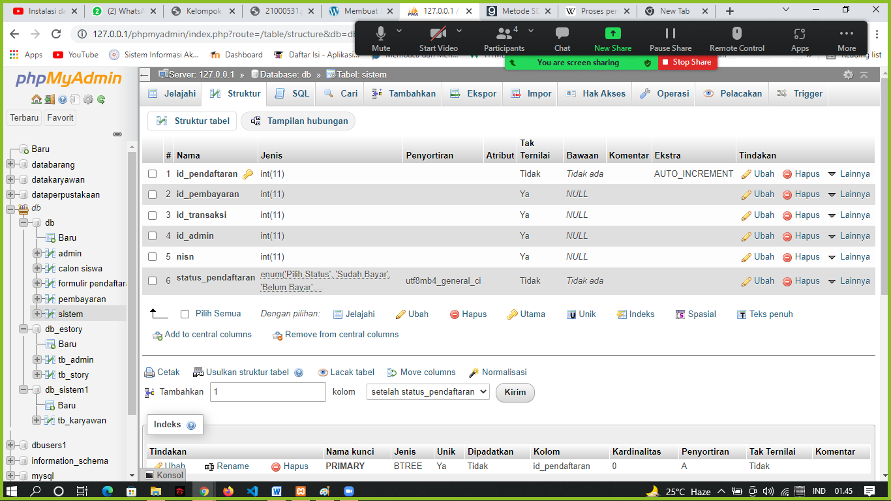
Gambar 10 Tabel Sistem
3.4 Relasi Tabel
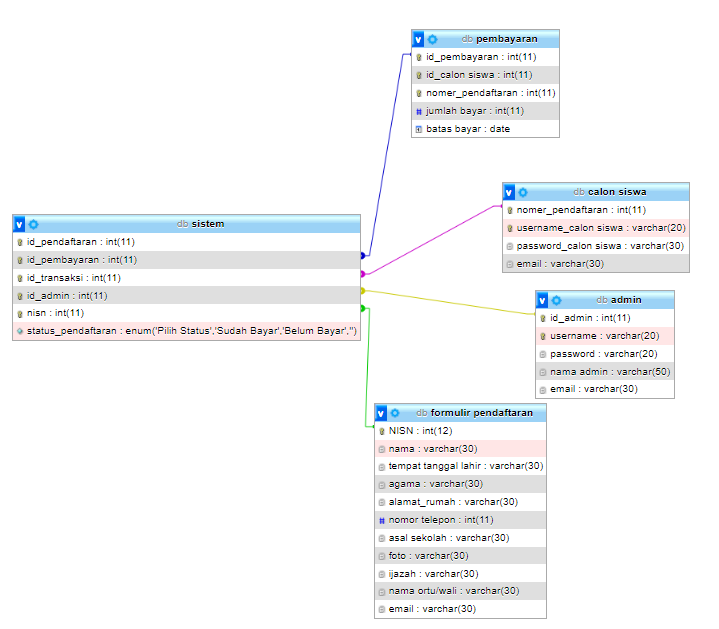Gambar 11 Relasi Tabel
3.5 Rancangan Desain UI
A. Rancangan tampilan desain UI halaman Home
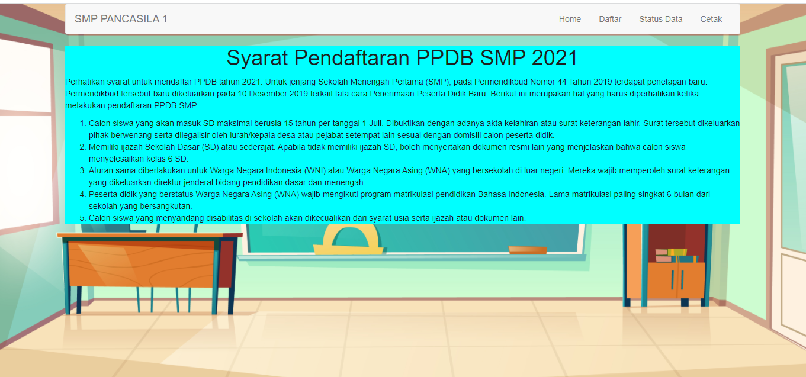Gambar 12 Halaman Utama
B. Rancangan tampilan desain UI halaman Daftar
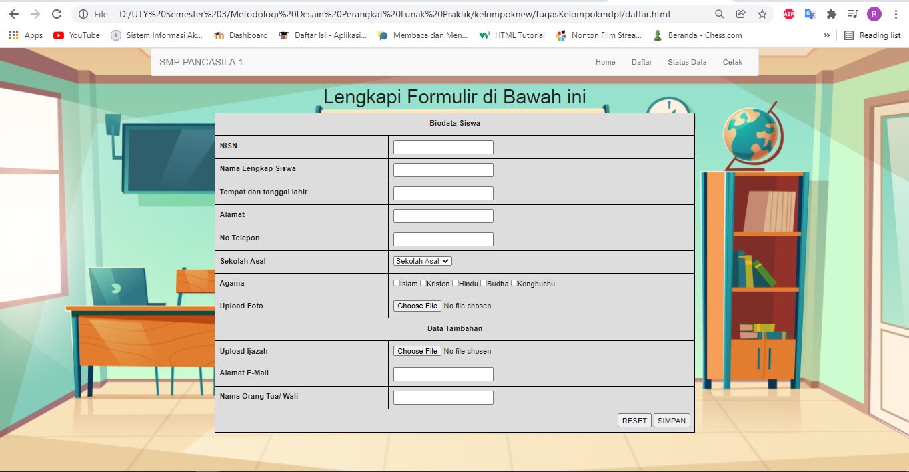Gambar 13 Halaman Daftar